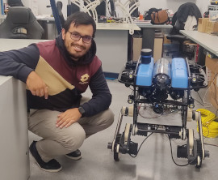

Contact Information
Email: francisco.rico (at) urjc.es
Email: francisco.rico (at) urjc.es
Full Professor
Escuela de Ingeniería de Fuenlabrada
Francisco Martín is a University Professor at the Universidad Rey Juan Carlos, where he leads the Intelligent Robotics Lab. He teaches subjects such as Software Architectures for Robots, and Planning and Cognitive Systems. He is the author of the book “A Concisse Introduction to Robot Programming with ROS 2” and is a member of the ROS 2 Technical Steering Committee. He is the author of PlanSys2, the symbolic planning reference software for ROS 2, and is a contributor to other reference packages such as rclcpp, Behavior Trees and Nav2. He is currently involved in several European and national projects, as his group is an international reference in ROS 2, navigation for mobile robots and planning. He was awarded in 2022 with the Best ROS Developer award at the ROS Developer Day and is a member of the ROS 2 TSC.
Associate Professor
Email: josemiguel.guerrero (at) urjc.es
Associate Professor
Email: rodrigo.perez (at) urjc.es
Assistant Professor
Email: jorge.beltran (at) urjc.es
Assistant Professor
Email: miguelangel.demiguel (at) urjc.es
Assistant Professor
Email: franciscom.moreno (at) urjc.es

Assistant Professor
Email: juan.cely (at) urjc.es
Assistant Professor
Email: esther.aguado (at) urjc.es
PhD Student
Email: juan.pena (at) urjc.es
PhD Student
Email: alberto.gomezjacinto (at) urjc.es